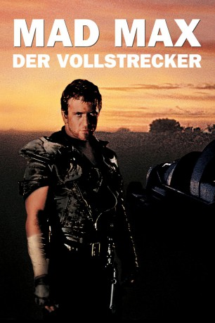

#1289 Mad Max 2 - Der Vollstrecker
Alternativ: Mad Max 2: The Road Warrior (Englischer Titel)
 
 IMDB-Wertung: 7.6 / 10
IMDB-Wertung: 7.6 / 10  Metascore: 77
Metascore: 77 
Das Ende der Zivilisation steht bevor. Brutale Motorrad-Gangs diktieren das Geschehen. Für einen Tropfen Benzin, sind sie bereit zu töten. Auch die Familie des Ex-Polizisten Max wurde ermordet. Auf der Suche nach Benzin gelangt er zu einer heiß umkämpften Raffinerie, zu der er sich Zugang verschafft. Die Leute dort planen den Ausbruch mit einem riesigen Benzintank, um irgendwo ein neues Leben zu beginnen. Max soll dafür einen Sattelschlepper besorgen und ihn samt Tank steuern. Als sich die Tore öffnen, beginnt eine höllische Jagd auf Leben und Tod.
Jahr: 1981
Dauer: 94 Minuten
FSK: 16
Land: Australien Studio: Warner Bros.Tonspuren:
Untertitel: , , , , Englisch, , Französisch, Deutsch, , , , Japanisch, Koreanisch, , ,
Auflösung: 1080p (1920x800) Größe: 11468 MB
Genre: Action, Abenteuer, Sci-Fi, Thriller
Regisseur: George Miller
Drehbuch: Terry Hayes, George Miller, Brian Hannant, George Miller, Byron Kennedy
Soundtrack: Brian May
Darsteller:
 Mel Gibson als Max
Mel Gibson als Max Bruce Spence als The Gyro Captain
Bruce Spence als The Gyro Captain Vernon Wells als Wez
Vernon Wells als Wez- Virginia Hey als Warrior Woman
- William Zappa als Zetta
- Harold Baigent als Voice of Narrator
- Michael Preston als Pappagallo
- Max Phipps als The Toadie
- Kjell Nilsson als The Humungus
- Emil Minty als The Feral Kid
- Arkie Whiteley als The Captain's Girl
- Steve J. Spears als Mechanic
- Syd Heylen als Curmudgeon
- Moira Claux als Big Rebecca
- David Downer als Nathan
- David Slingsby als Quiet Man
- Kristoffer Greaves als Mechanic's Assistant
- Max Fairchild als Broken Victim
- Tyler Coppin als Defiant Victim
- Jerry O'Sullivan als Golden Youth
- Tony Deary als Grinning Mohawker
- Kathleen McKay als Victim
- Guy Norris als Bearclaw Mohawk
- Anne Jones als Tent Lover
- James McCardell als Tent Lover
Datei: X:\4-Tetralogie(M-Z)\Mad Max\Mad Max 2 - Der Vollstrecker (1981, FSK16, 1920x800).mkv seit 16.06.2015
Festplatte: HD Collection-3(N-Z)-6(A-Z)
 Es gibt insgesamt 8 Filme in der Gruppe '4-Tetralogie(M-Z)\Mad Max'
Es gibt insgesamt 8 Filme in der Gruppe '4-Tetralogie(M-Z)\Mad Max'